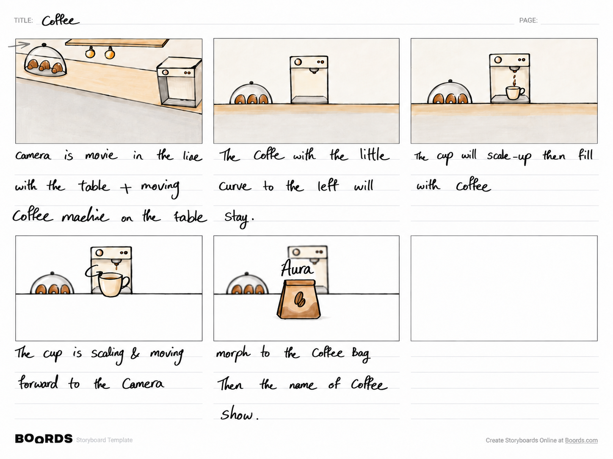

A familiar ritual.
A playful reveal.
A café counter, a freshly filled cup, and a transformation into the product. A short coffee animation that connects an everyday ritual to a brand reveal.
- Project
- Coffee brand
- Tools
- Blender & After Effects
- Format
- 8 seconds · 3D motion

Start with
the coffee ritual.
The concept begins with a recognizable café scene: a coffee machine, a countertop, and pastries beneath a glass dome. Warm cream and brown tones in the storyboard establish a simple, inviting setting.
The planned sequence moves from preparing a drink to revealing the packaged coffee. This gives the product introduction a small story of its own.
From counter
to close-up.
The opening panel proposes a camera move along the counter while the coffee machine moves into position. The framing then settles on the machine and the pastry display.
A cup scales into view beneath the spout and fills with coffee. It then grows and moves toward the camera, taking attention away from the wider scene and preparing the transition into the product.

One object becomes
the next.
The final illustrated panel calls for the cup to morph into a coffee bag, followed by the brand name. The sketch labels that reveal “Aura.”
By bringing the cup forward first, the storyboard gives the transformation a clear focal point. The machine and pastries remain in the background while the product takes the foreground.
3D form.
Graphic rhythm.
The piece was created with Blender for the 3D work and After Effects for motion design and compositing. It combines stylized product visuals with graphic animation in an eight-second promotional format.
The storyboard records the intended movement and reveal. The finished piece below shows the final timing and presentation.
The finished
piece.
Watch the final 8-second animation.
Watch on Aparat